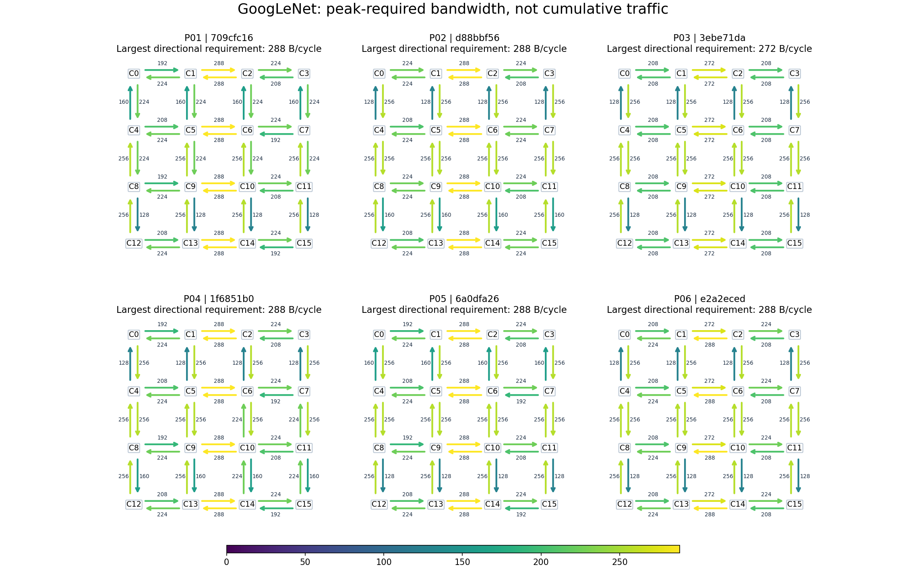
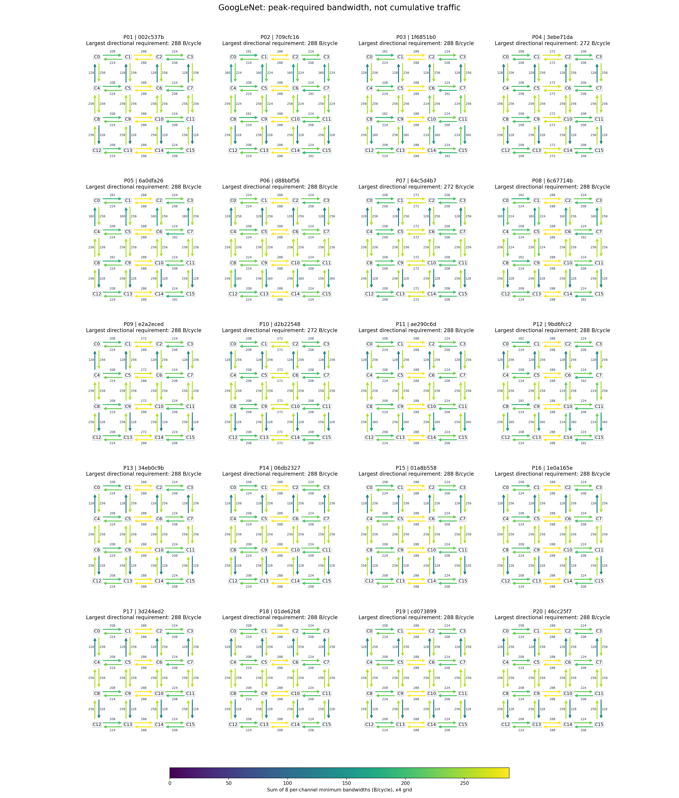

누적 traffic 그림을 수정했습니다. 각 채널에 대해 모든 실행 구간의 성능 제한을 만족시키는 최소 bandwidth를 계산했습니다. 각 구간의 전송량/허용시간 중 최대 요구를 x4로 올림한 값이며, 해당 mapping에서 전체 성능 유지도 검증됐습니다.
화살표 숫자와 색은 방향당 8채널 요구 bandwidth의 합(B/cycle)입니다. 채널별 최대 요구 시점이 다를 수 있으므로, 한 시점의 합산 전송률이나 측정된 포화율은 아닙니다. 원본 235개, 회전 0°끼리 비교해 분포 차이가 큰 6개를 선별했습니다.

정확한 bandwidth CSV · 최대 요구 링크 위치별 후보 수
